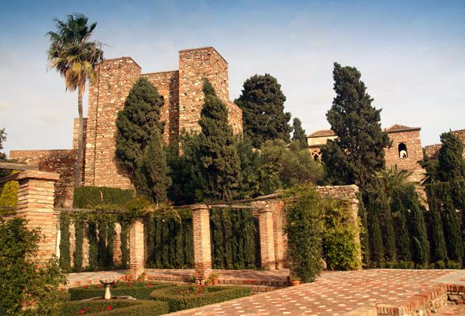
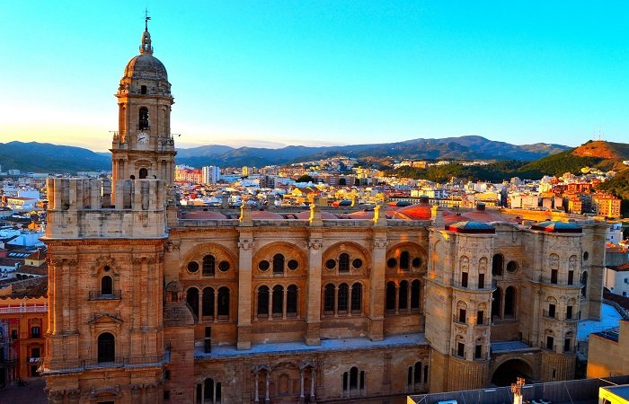
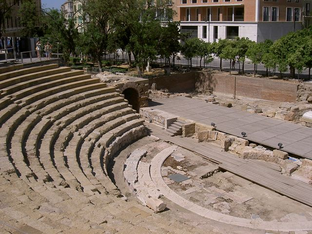

MÁLAGA
Málaga es una ciudad portuaria en la Costa del Sol, en el sur de España, conocida por sus hoteles de muchos pisos y los centros turísticos que sobresalen de sus playas de arena amarilla. Sobre ese moderno perfil, en dos colinas, se alzan las dos enormes ciudadelas de la ciudad, la Alcazaba y las ruinas de Gibralfaro, remanentes del régimen morisco. La altísima catedral renacentista de la ciudad se apoda La Manquita porque una de sus torres curiosamente no se terminó de construir.

Andrea: Málaga milenaria y cosmopolita en el pasado, conserva intactas sus raíces históricas. Si en tiempos remotos fue testigo de los orígenes del hombre y de la cultura mediterránea, hoy convertida en primera potencia de la industria turística andaluza, mantiene viva su tradición de tierra acogedora y creativa.
La alcazaba de Málaga es una fortificación palaciega de la época musulmana, construida sobre una anterior fortificación de origen fenicio-púnico.
El Museo Picasso Málaga es una de los dos pinacotecas dedicadas a Pablo Picasso situado en su ciudad natal Málaga, siendo la otra la Fundación Picasso Museo Casa Natal.
La Santa Iglesia Catedral Basílica de la Encarnación es la catedral de Málaga, España. Situada enfrente de la plaza del Obispo, el templo es considerado una de las joyas renacentistas más valiosas de Andalucía.
Gibralfaro es un monte de 130 metros de altitud, situado en la ciudad de española de Málaga, en torno al cual los fenicios fundaron la ciudad de Malaka.
El teatro romano de Málaga son los restos arqueológicos del teatro de la Malaca antigua y el principal vestigio conservado de la presencia romana en Málaga. Está situado en el centro histórico de la ciudad, a los pies de la colina de la Alcazaba.
